Chapter 10: The patient who abuses psychoactive substances (Under preparation)
Definitions
Pathogenesis
Screening assessment and diagnosis
Diagnostic algorithm
Substance specific signs, symptoms and disorders
- Alcohol
- Other substances
- Tobacco
What is expected of a primary care clinician?
When to refer to a specialist?
Management
- Alcohol
- Other substances
- Tobacco
Self directed learning material
Definitions
Psychoactive = refers to any substance that has an effect on the central nervous system. This includes recreational drugs, alcohol, nicotine, caffeine, prescribed or over-the-counter medication and poisons or toxin.
Harmful use = The continuation of substance use despite evidence of damage to the user’s physical or mental health or to their social, occupational, and familial well-being.
Dependence = It includes behavioural, physical and psychological dependence.
- Behavioural dependence = emphasis is on substance-seeking activities and pathologic use pattern
- Physical dependence = entails the development of tolerance and withdrawal
- Psychological dependence = development of habituation i.e. continuous or intermittent craving (intense desire) for the substance to avoid a dysphoric state
Addiction = is an older term and not used for reason of stigma associated with the term. However, it is still popular in layman language.
Substance use disorder = to reduced the stigma association with addiction and dependence, DSM-5 has used a more neutral term "substance use disorder" to describe a wide range of symptomatology from mild form to severe state of chronically relapsing, compulsive pattern of drug taking.
Intoxication = The pattern of reversible physical and mental abnormalities caused by the direct effects of a substance. These are specific and characteristic for each substance (e.g. disinhibition and ataxia for alcohol, euphoria and visual sensory distortions for LSD). Most substances have both pleasurable and unpleasant acute effects; for some, the balance of positive and negative effects is situation-, dose-, and route-dependent.
Tolerance = Higher quantity of substance is required to achieve the desired effect
DSM-5 (Recent use of substance + Mood or behavioural symptom from the use + one or more substance specific symptom of intoxication)
Withdrawal = Where there is physical dependence on a drug, abstinence will generally lead to features of withdrawal. These are characteristic for each drug. Some drugs are not associated with any withdrawals, some with mild symptoms only, and some with significant withdrawal syndromes. Clinically significant withdrawals are recognized in dependence on alcohol, opiates, nicotine, BDZs, amphetamines, and cocaine. Symptoms of withdrawal are often the ‘opposite’ of the acute effects of the drug (e.g. agitation and insomnia on BDZ withdrawal). DSM-5 (Reduction or stoppage of use after heavy prolonged use + substance specific symptoms of withdrawal). Onset may vary according to substance
- sedatives/hypnotics/anxiolytics, stimulants: hours to days
- alcohol and cannabis: not listed but approx 6-8 hrs
- opioids: minutes to days
- caffeine, tobacco: within 24 hr
Substance induced disorder = This overall category of disorders in DSM-5 includes substance intoxication, substance withdrawal, and substance/medication-induced mental disorders.
Stages of motivation
A model for understanding motivation and action towards change in harmful patterns of drug use was proposed by Prochaska and DiClemente. Motivation is regarded as a prerequisite for, and a precursor to, action towards abstinence or more controlled drug use. This model can be used when trying to tailor treatments to the individual.
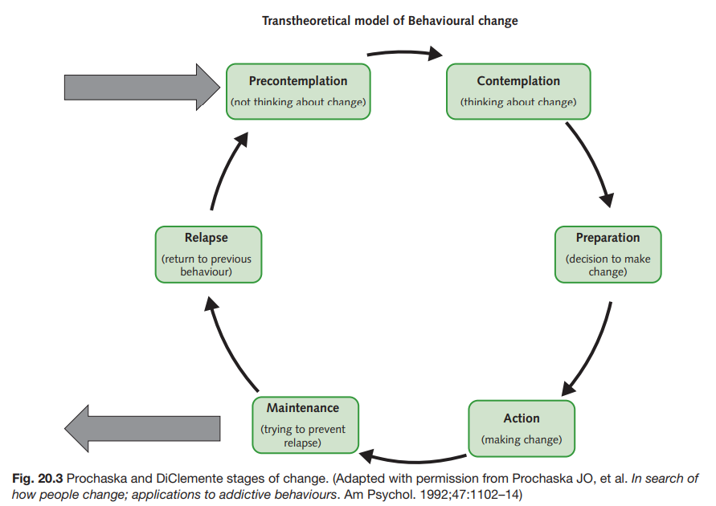
- Pre-contemplation - The user does not recognize that problem use exists, although this may be increasingly obvious to those around them.
- Contemplation - The user may accept that there is a problem and begins to look at both the positive and negative aspects of continued drug use.
- Preparation - The point at which the user decides on whether to continue drug use or attempt change.
- Action - The point of motivation where the user attempts change. A variety of routes exist by which change may be attempted, which may or may not include medical services.
- Maintenance - A stage of maintaining gains made and attempting to improve those areas of life harmed by drug use.
- Relapse - A return to previous behaviour, but with the possibility of gaining useful strategies to extend the maintenance period on the user’s next attempt.
Pathogenesis - Why people use psychoactive substances?
Generic Pathophysiology of Substance use
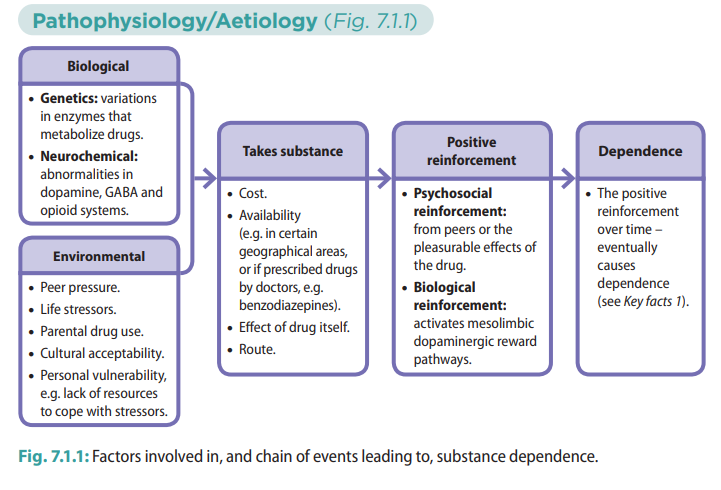
How does alcohol work in the brain and how are benzodiazepines helpful in their management?
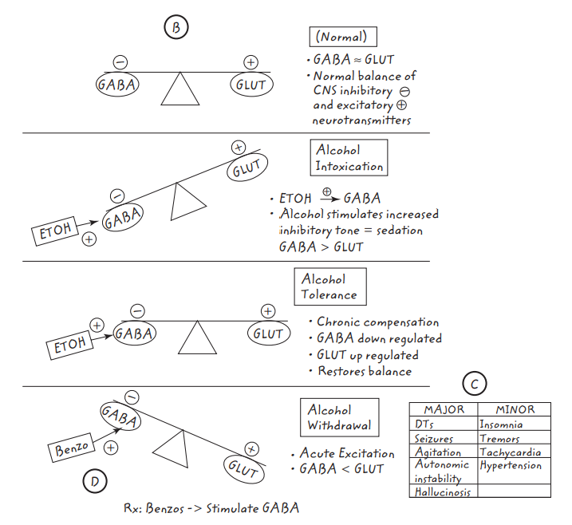
Screening, assessment and diagnosis
- Screen - (CAGE)
- A reasonable starting place in primary care is to use the CAGE-AID criteria for presence of at-risk use
- Cut down - Have you ever felt you ought to cut down on your drinking or drug use?
- Annoyed - Have people annoyed you by criticizing your drinking or drug use?
- Guilt - Have you felt bad or guilty about your drinking or drug use?
- Eye opener - Have you ever had a drink or used drugs first thing in the morning to steady your nerves or to get rid of a hangover?
- More than two positive responses on CAGE-AID suggests possible at-risk use and should prompt further assessment
- Assess current use (TRAP)
- Type
- Route
- Amount
- Pattern
- Assess for substance use disorder (CCCTWPHI)
- Loss of control
- Craving - Do to crave for drinks/drugs in between sessions?
- Control - Do to find it difficult to control the amount you drink/use after you have started?
- Cutdown - Have you ever felt you should cut back on your drinking/drug use?
- Time - How much time of your day is spent around alcohol/drug use?
- Physiological dependence
- Tolerance - Have you been needing to drink/use more to get the same effect?
- Withdrawal - Do you need to have drink/use drug first thing in the morning? Do you get tremors or any other symptoms if you don't take?
- Risky use
- Persistence - Does it worry you that drinking/drug use may be causing you some harm? (Key things is that pt is not able to stop despite the difficulty it is causing)
- e.g. continues to drink despite being told that he has cirrhosis
- smokes cigarettes despite having a lung mass
- continues to use weed despite spouse telling him about divorce
- continues to smoke despite being told that it may interfere with his radiotherapy
- Hazardous - Have you used alcohol/drug in situations where it can be harmful to yourself or others
- e.g. drink and drive
- works at heights and uses opioids to reduce anxiety
- works as a nurse / doctor and uses weed occasionally
- works at a gas station and smokes cigarettes
- Impact on functioning / Social impairment
- 'What has been the impact of all this on your day to day functioning? (work, debt, legal)
- Who’s at home? Is relationship with wife affected? Domestic violence? Anger/aggression toward children?
- On these questions we are looking for history s/o
- failure in fulfilling role obligations at work, school or home due to alcohol use e..g
- e.g. arriving late for work due to hangovers
- cant wake up early and misses a class
- keeps in front of TV drinking rather that interacting with family
- giving up of important social or occupational activities due to alcohol use
- the pt is unlikely to be telling this directly and has to be inferred from what this pt is not doing that he is capable of performing?
- a person who is not living up to his own capabilities
- e.g. skipping classes to have a smoke
- persistent or recurrent social or interpersonal problems due to alcohol use
- e.g. legal problems like fined for drunk driving, arrests for possession
- debts
- quarrels with spouse
- gets into fights
|
Substance use disorder diagnosis |
|
Detailed assessment of a patient with abuses alcohol is listed here.
Diagnostic algorithm
|
General Approach |
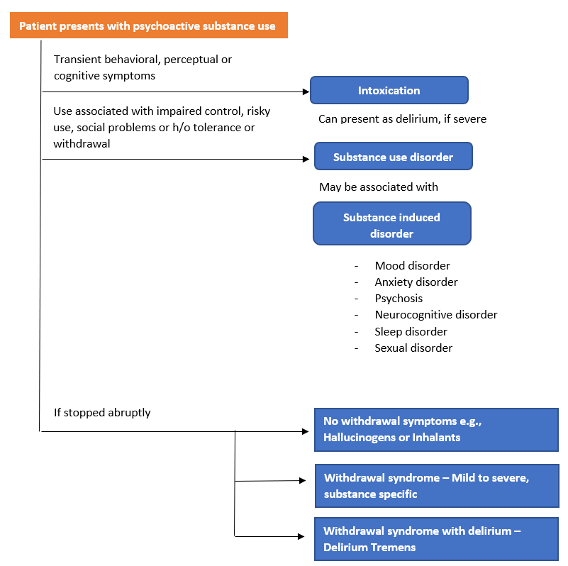 |
|
Screen? - CAGE |
|
|
Current use? - TRAP |
|
|
Use disorder? - CCCTWPHI |
|
|
Complications and risks? |
Substance specific signs, symptoms and disorders
ALCOHOL
Some interesting facts to remember about alcohol
Heavy drinker = those who drink significantly more in terms of quantity and/or frequency than is safe in the long term.
Binge drinker = those who drink excessively in short bouts, separated by often lengthy periods of abstinence.
Are all alcoholic drinks equal?
- No, a Unit of drink = 1 standard unit of alcohol is 10ml(8g) of 99.9% ethanol
- Drink unit calculation = total volume of drink (in ml) x percentage of alcohol / 1000
- e,g, 30 (ml of whisky in 1 peg) x 40 (percent of alcohol) / 1000 = 1.2 units
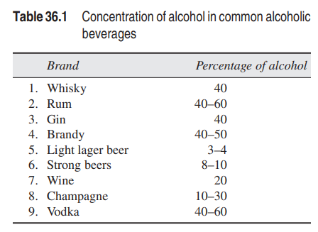
How much alcohol is too much?
- Earlier concept that drink below certain limits in terms of quantity is "safe" has been discarded.
- Newer guidelines dictate that there is no safe drinking limit, and drinking less than 14 units per week is for both genders is considered as "low risk".
- Harm is minimized by spreading drinking over 3 or more day.
- Heavy single use us associated with risk of harm, injury or accident.
- There is no low risk level in pregnancy. Precautionary avoidance of alcohol is necessary in pregnancy to reduce risk to fetus.
Alcohol metabolism
- Rate of alcohol metabolism in liver is approx 1 standard drink per hour (8g/hr)
- Enzymes involved in alcohol metabolism - Alcohol dehydrogenase, Aldehyde dehydrogenase
- Females have higher blood alcohol concentration compared to males if they drink the same amount of alcohol because ADH in females is less active then ADH in males
Alcohol intoxication
- Characterized by slurred speech, labile affect, impaired judgement and poor co-ordination.
- In severe cases, there may be hypoglycaemia, stupor and coma
- Law governing DUI(driving under influence) - Section 185 of Motor Vehicle Act, 1988
- has, in his blood, alcohol exceeding 30 mg/dL of blood detected in a test by a breath analyser, or
- is under this influence of a drug to such an extent as to be incapable of exercising proper control over the vehicle
- Easy way to remember alcohol intoxications symptoms as per BAC [blood alcohol concentration]
- S - Slowness (20-30mg/dL)
- I - In coordination (80-200mg/dL)
- N - Nystagmus (200-300mg/dL)
- C - Coma (>300mg/dL)
- Inherited deficiency in aldehydade dehydrogenase in Asian population can lead to build up of Acetaldehyde and lead to flushing and nausea after alcohol ingestion (aka Pathological intoxication)
Alcohol Withdrawal
- Mild withdrawal consists of malaise, tremor, nausea, insomnia, and autonomic hyperactivity
- Moderate withdrawal consists of transient perceptual disturbances or hallucinations
- Severe withdrawal includes seizures (rum fits)
- Life threatening withdrawal includes delirium tremens
- Begins b/w 24hrs and 1 week
- Physical illness in a predisposing factor
- Characterized by
- Attentional impairment and disorientation
- Hallucinations
- Paranoid delusions
- Marked tremors
- Autonomic hyperactivity
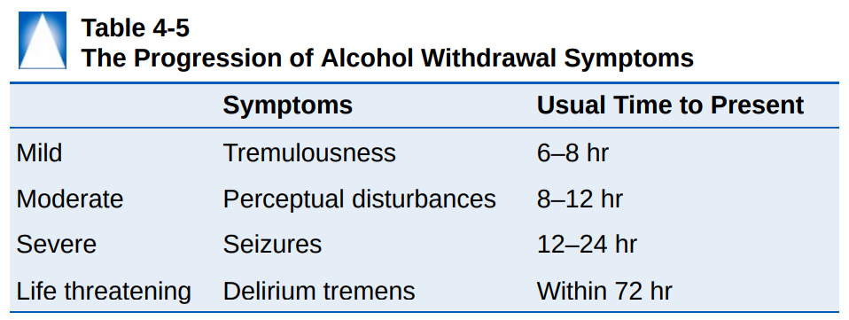
Complications of alcohol use
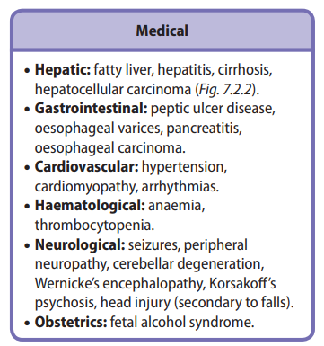
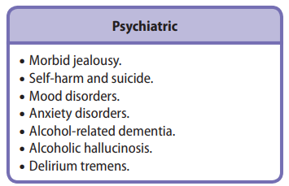
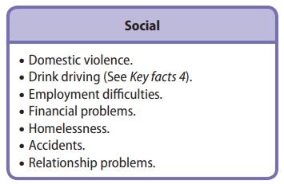
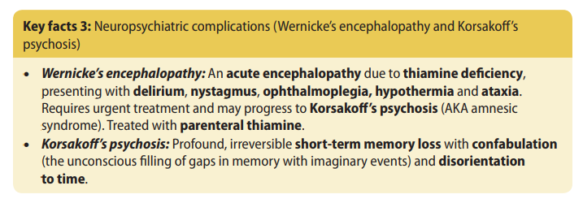
Investigations
- Blood: blood alcohol level, FBC (anaemia), U&Es (dehydration, ↓ urea), LFTs including gamma GT (may be ↑), blood alcohol concentration, MCV (macrocytosis), vitamin B12/folate/TFTs (alternative causes of ↑MCV), amylase (pancreatitis), hepatitis serology, glucose (hypoglycaemia).
- Alcohol questionnaires: Alcohol Use Disorders Identification Test (AUDIT), Severity of Alcohol Dependence Questionnaire (SADQ), FAST screening tool (4 items, designed for busy settings).
- CT head (if head injury is suspected).
- ECG (for arrhythmias).
OTHER SUBSTANCES
|
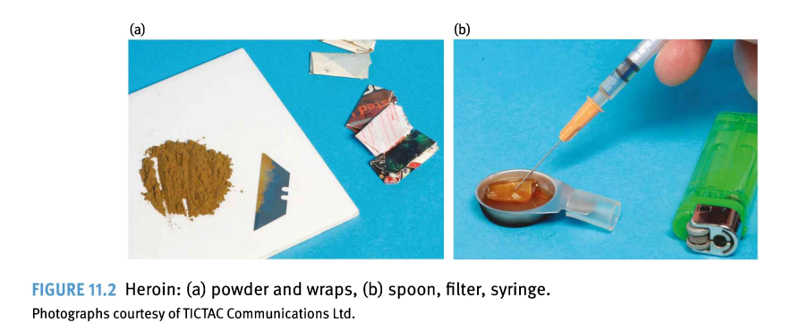 |
|
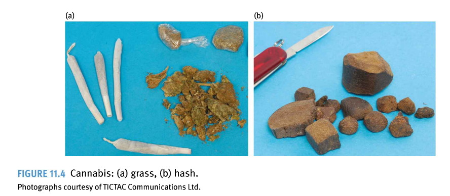 |
|
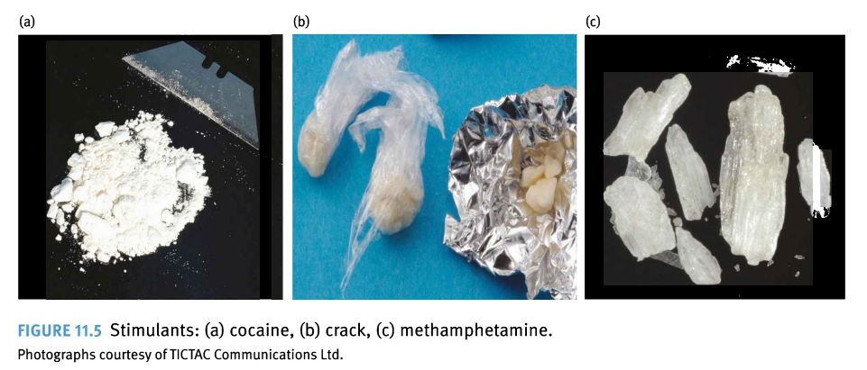 |
|
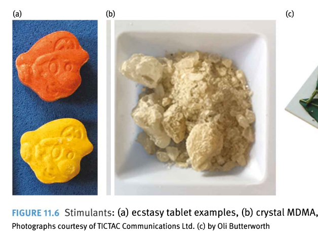 |
|
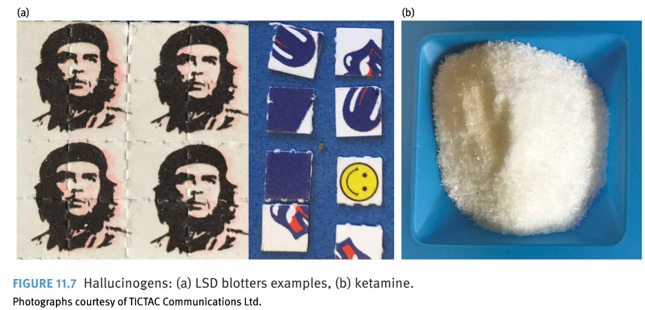 |
|
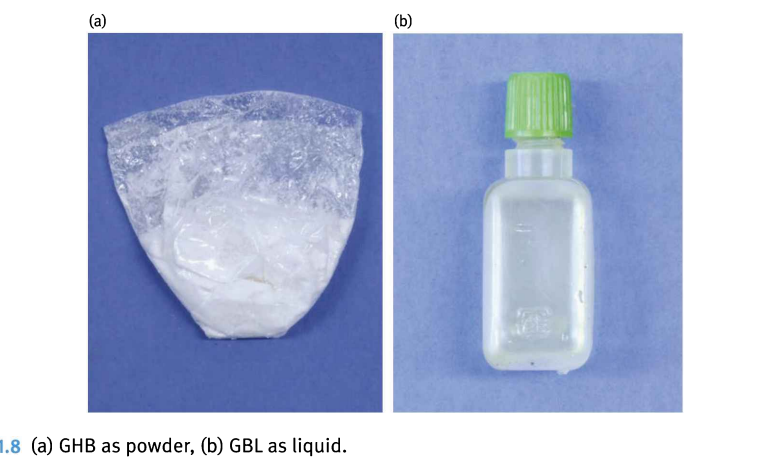 |
|
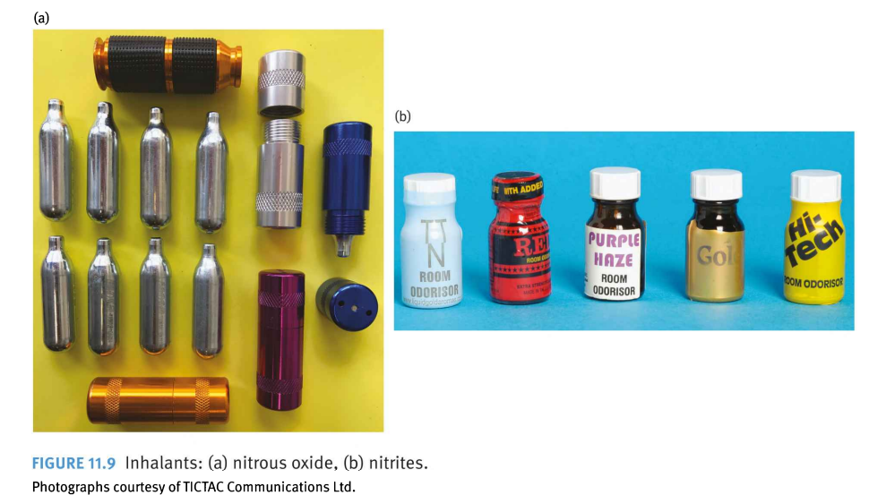 |
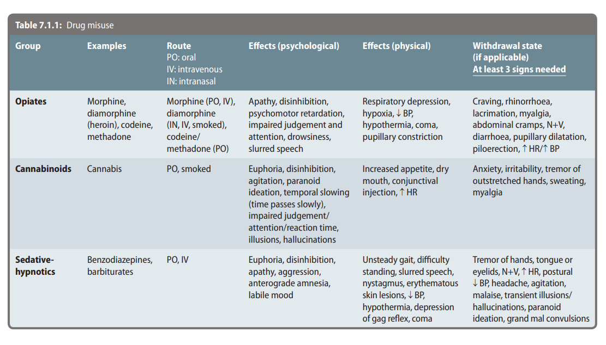
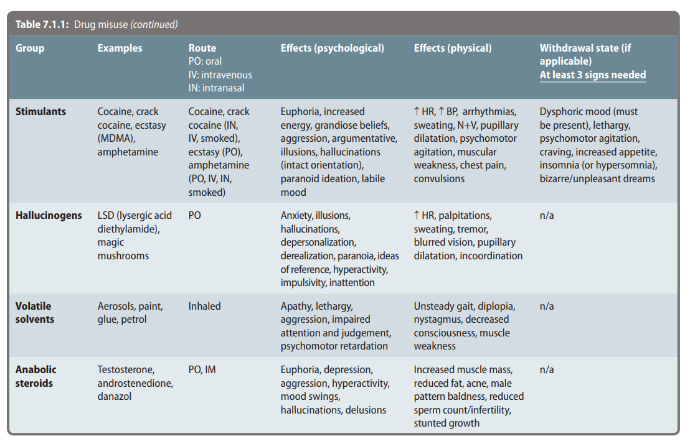
Complications of substance misuse
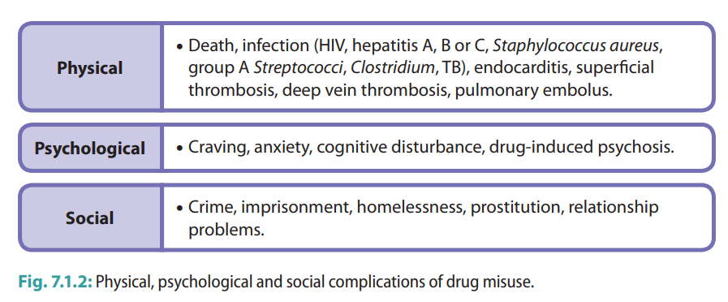
Investigations in a patient with substance misuse
- Bloods including: (1) HIV screen, Hep B, Hep C and tuberculosis testing → risk of blood-borne infections is thought to be greater through needle sharing; (2) U&Es to check renal function; (3) LFTs and clotting to check hepatic function; (4) Drug levels.
- Urinalysis: drug metabolites (e.g. cannabis, opioids) can be detected in urine.
- ECG for arrhythmias, ECHO if endocarditis suspected (secondary to needle sharing).
TOBACCO
|
Group |
Example |
Route |
Effects |
Withdrawal |
|
Tobacco |
Cigarette, Bidi, Khaini, Tambaku, Gutkha, Zarda, Mawa, Snuff |
Smoked, Chewed, Rubbed on the gums, inhaled nasally |
By releasing dopamine and adrenaline it leads to "kick" - pleasurable effect, increased HR, BP and respiratory rate |
within 24 hrs of ↓ - mood symptoms = irritability, anger, depression - physical symptoms = ↓ sleep. appetite, restlessness - cog. symptoms = difficulty in concentration |
What is expected of a primary care clinician?
The 5A's approach can be used with a patient who is using any kind of substance
Example The 5A's approach for a patient who is smoking at present
1. Ask: Identify tobacco use status for every patient
2. Advise: In a clear, strong, and personalized manner, urge every tobacco user to quit.
3. Assess: Is the tobacco user willing to make a quit attempt at this time?
4. Assist: For the patient willing to make a quit attempt, use counseling and pharmacotherapy to help him or her quit.
- set a quit date
- need for medications
- coping with withdrawal symptoms
- stimulus control
5. Arrange: Schedule follow-up contact, in person or by telephone, preferably within the first week after the quit date.
When to refer?
- Diagnostic clarification is required.
- The severity or complexity of the presentation is beyond your expertise.
- The patient requires support and services provided by a specialized centre (e.g., for pregnant women, trauma victims, youth).
- The patient has multiple problems
- The patient has only a partial response or no response to primary treatment.
Management
A. Biopsychosocial management of alcohol use disorder
1. Short term management [Withdrawal]
- Alcohol detoxification regime offers controlled withdrawal, and can be carried out in the community or as an inpatient in more severe cases, in order to achieve abstinence. Inpatient detoxification is recommended in patients at risk of suicide, those with poor social support or those with a history of severe withdrawal reactions.
- High dose benzodiazepines (commonly chlordiazepoxide) are given initially, and the dose is tapered down over 5–9 days.
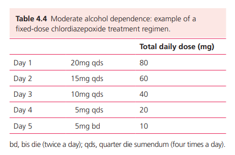
- Thiamine (Vitamin B1) is also given in order to prevent Wernicke’s encephalopathy. This can be given orally (200–300 mg daily in divided doses) or intravenously.
2. Long term management (for dependence)
- Pharmacological therapies include:
- Disulfiram: Works by causing a build-up of acetaldehyde on consumption of alcohol, causing unpleasant symptoms e.g. anxiety, flushing and headache. [Aversion]
- Acamprosate: Reduces craving by enhancing GABA transmission.
- Naltrexone: Blocks opioid receptors (antagonist) in the body, thus reducing the pleasurable effects of alcohol.
- Motivational interviewing: guides the person into wanting to change. Motivational interviewing is most effective during the pre-contemplation and contemplation phases.
- CBT can be effective in managing alcohol problems and focuses specifically on alcohol-related beliefs and behaviours.
- Alcoholics Anonymous (AA) is a popular supportive programme for patients who accept that they have a drinking problem. It is a 12-step approach that utilizes psychosocial techniques in order to change behaviour (e.g. social support networks, rewards).
B. Biopsychosocial management of drug use
1. Detoxification
- Is a process in which the effects of the drug are eliminated in a safe manner (a replacement drug prescribed and weaned) such that withdrawal symptoms are avoided, in an attempt to attain abstinence. e.g. methadone or buprenorphine can be used for opioid detoxification
- Adjunctive benzodiazepines may be used in the detox phase
- Hep-B vaccination for those at-risk
2. Long term management
- Pharmacological therapies
- Naltrexone is recommended for those who were formerly opioid-dependent but have now stopped and are motivated to continue abstinence
- Motivational interviewing to help with controlling the substance misuse and CBT (for co-morbid depression or anxiety) may be offered
- Self-help groups, e.g. Narcotics Anonymous and Cocaine Anonymous.
- Contingency management is a technique that focuses on changing specified behaviours by offering incentives (e.g. financial) for positive behaviours such as abstinence.
- Supportive help can be in housing, finance and employment.
- Help with co-existing alcohol misuse and smoking cessation should be offered.
- Harm reduction = Harm reduction is a method of managing drug users, in which it is accepted that steps can be taken to reduce the mortality and morbidity for the user without necessarily insisting on abstinence from drugs. Examples of such strategies include:
- Advice directed at use of safer drugs or routes of administration.
- Advice regarding safer injecting practice.
- Advice regarding safe sex.
- Prescription of maintenance opiates (substitution prescribing) or BDZs.
- Assessment and treatment of co-morbid physical or mental illness.
- Engagement with other sources of help (e.g. social work, housing)
C. Biopsychosocial management of tobacco use
- Pharmacological management
- Nicotine replacement therapy - Nocotine chewing gums, pastiles and patches
- Non-nicotine therapy - Buproprion, Varenicline
- Psychosocial management
- Motivational interviewing
- Behaviour therapy
- Stimulus control - eliminating smoking cues from the environment
- Relapse prevention - Identify high-risk situations and plan and practice behavior or cognitive coping skills for those situations
- Aversive therapy - smokers smoke repeatedly and rapidly to the point of nausea, which associated smoking with unpleasant rather than pleasant sensations
Self directed learning material for psychoactive substance use
1. Role-play of 5A approach for smoking cessation
2. Neurobiology of addiction
Bibliography
1. First Aid for the Psychiatry Clerkship 5e
2. Synopsis of Psychiatry 11e.
3. Carlat, Daniel. The Psychiatric Interview. Wolters Kluwer Health. Kindle Edition.
4. Nussbaum A. DSM-5 Diagnostic interview.
5. Crash Course Psychiatry 5e.
6. Oxford Handbook of Psychiatry, 4e.
7. Azam M. Psychiatry handbook. 1e.
8. Kumar and Clark. Clinical Medicine 20e.
9. Chalk talks in internal medicine. 1e.
10. Synopsis of Psychiatry. 12e.
11. Sharma RK. Concise textbook of forensic medicine. 1e
Created with the Personal Edition of HelpNDoc: Maximize Your Documentation Capabilities with a Help Authoring Tool